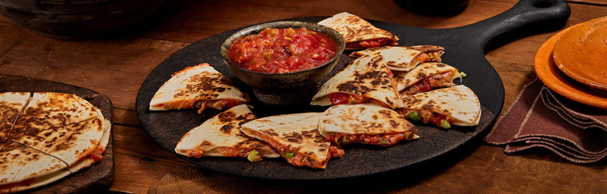

Quesadillas

Description
These quick cooking quesadillas are loaded with cheese, salsa and green onions and are perfect for those busy weeknights when you don't have a lot of time.
They're easy, kid-friendly and just plain good!
Ingredients
- 6 flour tortilla (8-inch), warmed
- 1 1/2 cups shredded Monterey Jack cheese (about 6 ounces)
- 2 medium green onion, sliced (about 1/4 cup)
- 3/4 cup Pace® Chunky Salsa or Picante Sauce, Medium
- 2 tablespoons canola oil
Steps
Step 1
Top half of each tortilla with 1/4 cup cheese, 2 teaspoons green onions and 1 tablespoon salsa. Brush the edges of the tortillas with water. Fold the tortillas over the filling and press to seal.
Stir together olive oil, garlic, herbs, and juice of 1/2 lemon. Spoon over salmon fillets being sure to rub all over the tops and sides of the salmon so it has no dry spots. Thinly slice remaining 1/2 of lemon and top each piece of salmon with a slice of lemon.
Heat the oil in a 12-inch skillet over medium-high heat. Add the quesadillas and cook in batches until lightly browned on both sides and the cheese is melted. Serve with the remaining salsa.
Tip!
For heartier quesadillas, you can add chopped cooked chicken, cooked black beans or refried beans.